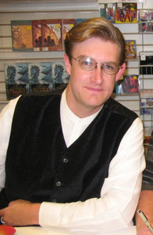

S. J. Chambers
S. J. Chambers’ fiction and poetry has appeared in a variety of venues including Mungbeingmagazine (which is currently running her wino-fiction serial Vintage Scenes), New Myths, Yankee Pot Roast, and in anthologies such as the World Fantasy nominated Thackery T. Lambshead’s Cabinet Of Curiosities (HarperCollins, 2011), Zombies: Shambling Through The Ages (Prime Books, 2013), The New Gothic (Stone Skin Press, 2013), the Spanish Steampunk anthologies Planes B and Acronos II (Tyrannosaurus Books, 2014), and in the forthcoming Steampunk World (Alliteration Ink, 2014) and the Starry Wisdom Library (PS Publishing, 2014) collections.
Her non-fiction has appeared at Tor.Com, Bookslut, WeirdFictionReview.com, and Strange Horizons (where she was also the Articles Senior Editor for two years). She has been nominated for a Pushcart prize, and her first book, The Steampunk Bible (Abrams Image, 2011) co-authored with Jeff Vandermeer, was nominated for the Hugo and World Fantasy award.
She can be found to blog irregularly at www.selenachambers.wordpress.com
Cory Doctorow
 Cory Doctorow (craphound.com) is a science fiction author, activist, journalist and blogger — the co-editor of Boing
Cory Doctorow (craphound.com) is a science fiction author, activist, journalist and blogger — the co-editor of Boing
Boing (boingboing.net) and the author of young adult novels like HOMELAND, PIRATE CINEMA and LITTLE BROTHER and novels for adults like RAPTURE OF THE NERDS and MAKERS. He is the former European director of the Electronic Frontier Foundation and co-founded the UK Open Rights Group. Born in Toronto, Canada, he now lives in London.
The DoubleClicks
 The Doubleclicks are a pair of sisters from Portland, Oregon who write songs that are snarky, geeky and sweet about topics ranging from Dungeons and Dragons to Mr. Darcy and Velociraptors. Their music video “Nothing to Prove” struck a chord in the geek community, earning nearly 1 million views by calling out the “fake geek girl” issue, and their 2013 album “Lasers and Feelings” debuted in the top 10 on the Billboard comedy chart. They tour the U.S. regularly, playing concerts at conventions, comic shops and game stores, and have performed with nerddom and music greats including Paul & Storm, Wil Wheaton, and Jonathan Coulton.
The Doubleclicks are a pair of sisters from Portland, Oregon who write songs that are snarky, geeky and sweet about topics ranging from Dungeons and Dragons to Mr. Darcy and Velociraptors. Their music video “Nothing to Prove” struck a chord in the geek community, earning nearly 1 million views by calling out the “fake geek girl” issue, and their 2013 album “Lasers and Feelings” debuted in the top 10 on the Billboard comedy chart. They tour the U.S. regularly, playing concerts at conventions, comic shops and game stores, and have performed with nerddom and music greats including Paul & Storm, Wil Wheaton, and Jonathan Coulton.
Website: http://www.thedoubleclicks.com/
Twitter: @thedoubleclicks
Music: Bandcamp & YouTube
Mary Anne Mohanraj
Mary Anne Mohanraj is author of Bodies in Motion (HarperCollins), The Stars Change (Circlet Press) and ten other titles. Bodies in Motion was a finalist for the Asian American Book Awards, a USA Today Notable Book, and has been translated into six languages. The Stars Change is a science fiction novella, and finalist for the Lambda, Rainbow, and Bisexual Book Awards. Previous titles include Aqua Erotica,Wet, Kathryn in the City, The Classics Professor, The Best of Strange Horizons, Without a Map, The Poet’s Journey, and A Taste of Serendib (a Sri Lankan cookbook).
Mohanraj founded the Hugo-nominated magazine, Strange Horizons, and was Guest of Honor at WisCon 2010 and Maneki Neko Con. She serves as Executive Director of the Speculative Literature Foundation (speclit.org), has taught at the Clarion SF/F workshop, and is Clinical Assistant Professor of English at the University of Illinois at Chicago.
Jody Lynn Nye
Jody Lynn Nye lists her main career activity as ‘spoiling cats.’ When not engaged upon this worthy occupation, she writes fantasy and science fiction books and short stories.
Over the last twenty or so years, Jody has taught in numerous writing workshops and participated on hundreds of panels covering the subjects of writing and being published at science-fiction conventions. She has also spoken in schools and libraries around the north and northwest suburbs. In 2007 she taught fantasy writing at Columbia College Chicago. She also runs the two-day writers workshop at DragonCon.
Jody lives in the northwest suburbs of Chicago, with her husband Bill Fawcett, a writer, game designer, military historian and book packager, and a black cat, Jeremy. Check out her websites at www.jodynye.com and mythadventures.net. She is on Facebook as Jody Lynn Nye and Twitter @JodyLynnNye.
James A. Owen
James A. Owen is an author, illustrator, and speaker. He created two dozen StarChild comics, and was named to trade magazine Hero Illustrated’s list of the one hundred most influential people in the Comic Book Industry in 1994 and 1995.
James drew over 200 illustrations, as well as the covers, for his epic seven book series of young adult novels, the Chronicles of the Imaginarium Geographica. More than a million copies of his publications are in print, and are sold all over the world.
Often asked to speak at schools, James rarely discusses his books, instead focusing on stories from his own life – examples of overcoming obstacles and adversity, how making choices in life is like drawing a Dragon, and how he came to do what he loves most for his job. These stories are the inspirational non-fiction book, Drawing Out The Dragons, the first of three books called The Meditations.
Fool’s Hollow, the first of a five-volume YA series, will come out in 2013. It’s both a literary homecoming for James as well as a starting point for a bold, new adventure, because Fool’s Hollow will be a grand retelling and completion of the StarChild saga with dozens of new, original illustrations
James is the founder and executive director of the Coppervale Studio, a 14,000 square foot, century-old restored church in Arizona.
http://www.jamesaowen.com
Diana M. Pho
Diana M. Pho (Ay-leen the Peacemaker) is a scholar, activist, performer, and general rabble-rouser. She is best-known for running Beyond Victoriana, an award-winning, US-based blog on multicultural steampunk, and the oldest-existing blog on this topic. She has published academic articles on steampunk and its community and has written introductions to The Anatomy of Steampunk and Steampunk World. Future work includes articles in Like Clockwork, edited by Professors Brian Croxall and Rachel Bowser and The Steampunk User’s Manual by Jeff Vandermeer and Desirina Boskovich. She has been interviewed for many media outlets, including BBC America, the Travel Channel, HGTV, and the Science Channel; the websites Airship Ambassador, Racialicious, and NerdCaliber; and the books The Steampunk Bible, Steampunk: Reloaded, and The WisCon Chronicles Vol 5. Diana currently lives and works in New York City as an editor for Tor Books & blogs for Tor.com. You can follow her academic work on Academia.edu.
Psyche Corp
 Psyche Corporation is a dark fairytale cyberpunk/steampunk band named after a dream manufacture group from a future where widespread neural implants allow people to download dreams from the Internet. Songs deal in dystopian themes as well as the surreal psychological landscapes of sleeping minds. The musical style spans genres; a recent song has mixed tribal singing with classical piano while embedding poliovirus DNA into its percussion. Our sound is best described as a mix of trip-hop electro-industrial rock and alternative world music.
Psyche Corporation is a dark fairytale cyberpunk/steampunk band named after a dream manufacture group from a future where widespread neural implants allow people to download dreams from the Internet. Songs deal in dystopian themes as well as the surreal psychological landscapes of sleeping minds. The musical style spans genres; a recent song has mixed tribal singing with classical piano while embedding poliovirus DNA into its percussion. Our sound is best described as a mix of trip-hop electro-industrial rock and alternative world music.
Listening to our songs sweeps you into a dark vaudeville theater, full of charismatic vigilantes and charming young ladies built of clockwork and flowers. You will be mesmerized. You will be carried away, perhaps to Neptune, where the gravity compacts ambient carbon into rains of diamonds. And you will almost certainly be ambushed with science, dressed in a cute outfit, while possibly spinning furry purple balls on chains
Ashley Lauren Rogers
Ashley Lauren Rogers (A.k.a Lucretia Dearfour and Madeline Foxtrot in the Steampunk Community) earned a Bachelor’s of English Literature and Theatre at Fitchburg State College, was a guest at the inaugural Women Out of Binders Academic Conference, was invited to the two week summer playwriting intensive at the Kennedy Center in Washington DC, has directed multiple plays (including the New England premier of Roberto Aguirres Sacasa’s “The Velvet Sky,” for the Falcon Players), and has written plays that have been performed in New York City, Multiple locations in MA, and as far as WI. Recently her plays “A Kiss in the Dreamhouse,” and “The Sounds of Madness,” were produced in New York City as part of Stage Left Studio’s Left Out Festival and the New York Nineteenth Century Society’s “Extravaganza,” respectively and her farce “Generation (Laz)Y” just had a premiere reading with Theatre To Go in MA. Ashley is the creator of “Ashley Rogers Does Something Awesome,” “Monthly Tea with Madeline Foxtrot,” and has been a writer on the first two seasons of “Marisa and Rocco,” all through Dogtoon Media. She has been featured in the Frenchy and The Punk Music video for “House of Cards,” Sundance Channel’s “Young Broke and Beautiful,” and TLC’s “Bling It On.” Ashley has written articles for Beyond Victoriana and Steampunk Magazine Online, has been a vlogger and a blogger for NerdCaliber.com.
Sherri L. Smith
 By day she works in a monster factory, at night she writes by the glow of her laptop. Sherri L. Smith is the author of five award-winning young adult novels, including the 2009 California Book Awards Gold Medalist, Flygirl—a World War II adventure the Washington Post named a best book of the year. Her latest novel is Orleans, a “cli-fi” adventure set in a future, post-disaster New Orleans where the survivors have gone tribal, separated by blood type to stem the spread of deadly disease. Sherri was a judge for the 2014 National Book Awards in Young People’s Literature and a three-time writer-in-residence at Hedgebrook, a women writers’ retreat in Washington State. She’s worked in comic books, animation and construction. Her newest book, The Toymaker’s Apprentice, is an historical clockwork fantasy based on “The Nutcracker,” in stores this fall. Learn more at www.sherrilsmith.com.
By day she works in a monster factory, at night she writes by the glow of her laptop. Sherri L. Smith is the author of five award-winning young adult novels, including the 2009 California Book Awards Gold Medalist, Flygirl—a World War II adventure the Washington Post named a best book of the year. Her latest novel is Orleans, a “cli-fi” adventure set in a future, post-disaster New Orleans where the survivors have gone tribal, separated by blood type to stem the spread of deadly disease. Sherri was a judge for the 2014 National Book Awards in Young People’s Literature and a three-time writer-in-residence at Hedgebrook, a women writers’ retreat in Washington State. She’s worked in comic books, animation and construction. Her newest book, The Toymaker’s Apprentice, is an historical clockwork fantasy based on “The Nutcracker,” in stores this fall. Learn more at www.sherrilsmith.com.